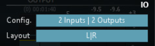
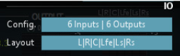
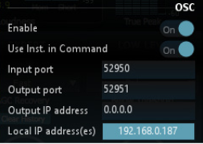
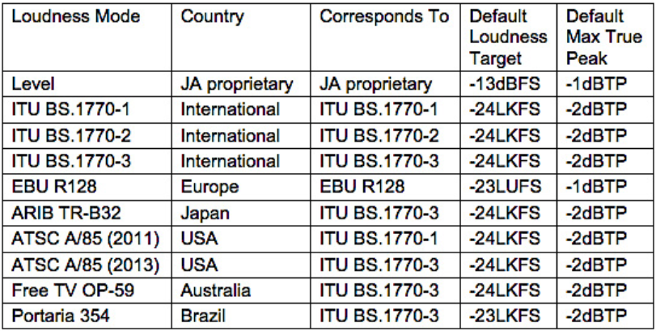
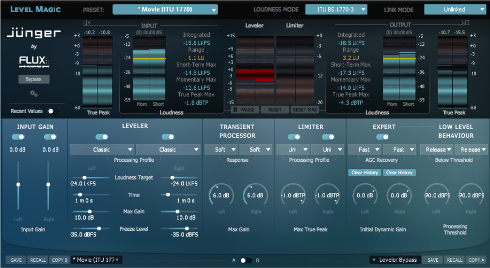
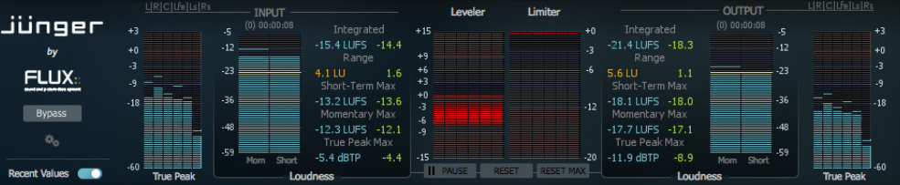

2 General Settings
2.1 Bypass (1)
When pressed, the inputs are routed directly to the outputs.
2.2 Plug-In Settings (2)
Pressing the cogwheels opens a settings window providing a range of general settings as well as a direct access button to the user manual.
- Input / Output: IO Config & Layout is not always available … it is always displayed but can only be edited in some configuration and Format.
|  |  |
| Stereo Configuration | Multichannel (5.1) Configuration |
- Config: Current I/O configuration. Config is only available in certain VST hosts; typically hosts with limited capabilites for handling multichannel configurations.
- Layout: Available I/O routings based on current I/O configuration. Layout is available for editing if more than two input channels are available. If the Layout is changed from the default value, an asterisk * is displayed next to the Layout infomation in the Input section.
| I/O Layout information |
- User Interface - Maximum Meter(s) Refresh: Enables/Disables the max refresh rate of the plug-in’s metering.
- Processing - Report Latency: Enables/Disables latency reporting to the host.
- Automation - Multi thread: Enables/Disables Multi-thread Automation, which is only available in VST. It forces the plugin to handle the parameters changes in a separate thread to avoid using the audio processing thread, if the host is doing this, which is typically the case in Nuendo and Cubase. If CPU spikes are experienced in the audio processing (DSP performence monitor) it may help to enable this feature. It is not available in AAX as Protools is already handling parameters changes in seperate threads, as does AU plug-ins.
- OSC (Open Sound Control): Enables/Disables OSC control & mapping of the plug-in’s parameters. More information on how to use and setup OSC can be found under “Open Sound Control” in this document.
|  |
| OSC Settings |
- Version Information: Plug-in version and build number information.
- User Manual / Credits: Quick link to the User Manual. Plug-in creation credits.
2.3 Current Selected Preset (3)
Displays the current selected preset name. Clicking the arrow opens a new window accessing the built-in preset manager.
2.4 Loudness Mode (4)
Level This is a Jünger Audio proprietary level based process with the purpose to maintain an anticipated operating level. The algorithm is intellectual property of Jünger Audio.
ITU BS.1770-1 Loudness based measurement. Several filters and RMS weighting are used to get a loudness equivalent result. Starting from the well-known A, B, C weighting curves (DIN-IEC 651) the ITU did further research into the relationship of frequencies, their overall levels, their peak levels and the duration of signals, to develop the best representation of human loudness perception.
ITU BS.1770-2 and ITU BS.1770-3 The ITU BS.1770-1 frequency weighted measurement has been extended by a gating function.
The EBU PLOUD-Group developed a gating function to exclude quiet sections from the measurement to prevent possible loudness under-read. An example is background noise, which does not contribute to the loudness perception as much as louder signals. This gating function consists of an absolute threshold at -70LUFS and a relative threshold 10LU below the absolute gated level.
This involves the necessity to recalculate the whole measurement with every subsequent block.
- EBU R128 This is a work-to-rule based on ITU BS.1770-3.
To characterize an audio signal the measurements of Program Loudness, Loudness Range and Maximum True Peak Level are used. The Program Loudness level is normalized to -23LUFS with a permitted deviation of +/- 1LU.
The measurement includes a gating method as specified in ITU BS.1770-2/-3 (EBU Tech Doc 3341). Loudness Range (LRA) measures the variation of loudness over the measurement interval. It is supplementary to the measurement of overall (integrated) loudness. Units are LU (EBU Tech Doc 3342). The maximum permitted True Peak Level of a program during production is -1dBTP.
- Summary, Available Modes 
!> Important note: Systems working in ITU BS.1770-1 mode do not feature a gating function. Thus its output readings may vary from meters compliant to EBU R128 or ITU BS.1770-2/-3. Further keep in mind that the gate is only applicable to the integrated or program loudness measurement and not used for short-term or momentary measurements.
2.5 Link Mode (5)
The link function connects all the parameters of the processed channels and links the control circuits of the processing blocks in order to maintain the sound balance of these channels.
Two link options are available for stereo and surround processing:
- Stereo Mode: Linked/Unlinked
- Surround Mode (Only affecting the LFE channel): Linked/Unlink LFE

Stereo Mode - Unlinked
2.6 Recent Values (6)
When pressed, the results of the recent loudness measurement cycle, before Reset (8) was pressed, are displayed.

The recent values are the values displayed in Green to the right of the RT values.
2.7 Pause / Continue (7)
When pressed, the current loudness measurement cycle is paused/resumed.
The time markers under Input and Output displays the effective duration of the current measurement cycle; pause periods are not calculated into the effective duration.
2.8 Reset (8)
When pressed, a new loudness measurement cycle is started and the current one is ended. The current values are stored in Recent Values (6) right before Reset is pressed. Level Magic
2.9 Reset Max (9)
Resets only the ‘max-parameters’ (Short-Term Max, Momentary Max, True Peak Max) without ending the loudness measurement cycle. The measurement of the integrated loudness and the loudness range will not be affected.
2.10 Input Gain Enable (10)
When pressed, the main Input Gain is enabled.
Value Range: ON / OFF
2.11 Input Gain (11)
Adjusts the main Input Gain.
Value Range: -20 / +20 dBFS
2.12 Leveler Enable (12)
When pressed, the leveler processing is enabled.
Value Range: ON / OFF
2.13 Leveler Processing Profile (13)
The leveling process is designed to always deliver an as neutral and well sounding result as possible, and an option to further improve its neutrality is provided by selecting one of the five given presets to match the actual content of the processed audio signal.
Processing Profile Presets:
- Live Fastest response
- Speech Fast response
- Pop Medium response
- Uni Slow response
- Classic Slowest response
2.14 Leveler Loudness Target (14)
Please Note - This parameter is available in all modes except the Level mode.
The Loudness Target is the target level of the whole leveling process according to the ITU/EBU regulations.
ITU has defined the unit of measure to LKFS (Loudness, K-weighted, referenced to digital Full Scale, averaged out over the duration of the piece), and EBU has defined the unit of measure to LUFS (Loudness Units, relative to digital Full Scale). LKFS and LUFS are different unit names for the same measure, which are fully compatible.
Value Range: 0 / -50 LKFS/LUFS
2.15 Leveler Operating Level (14)
Please Note - This parameter is only available in the Level mode.
The signal is balanced around this operating level to achieve a consistent loudness impression for the listener. In order to preserve the natural dynamics of the program the balancing process does not, as far as it’s possible, affect single peaks.
Value Range: 0 / -50 dBFS
2.16 Leveler Time (15)
The Leveler Time parameter controls the speed at which LevelMagic(TM) attempts to reach the loudness target. This setting should not be confused with the attack time of a conventional sound processor.
As the leveling process is a self-adjusting system the Leveler Time is not an absolute term but rather an initial value that could exceed the numerical value many times. When setting the Time it is necessary to take the overall function of the system into account. Production duties may require faster time settings, while ingest or play-out correction systems may require slower settings.
Value Range: 10 sec. / 2h
2.17 Leveler Max Gain (16)
The Leveler Max Gain parameter controls the maximum permitted gain change to reach the target level. Limiting the maximum amount of gain can be advantageous in order to minimize the risk of overly boosting noise and other unwanted signals.
The maximum attenuation is not affected by this setting. The system regulates the maximum attenuation adaptively to the signal structure.
Value Range: 0 / +40 dB
2.18 Leveler Freeze Level (17)
The Leveler Freeze Level function holds the amount of gain or attenuation if the signal level drops below this threshold.
It works in a similar way to a hold function in other sound processors.
An example:
> Assuming the process applies a gain change of 10 dB to achieve target loudness, the input level will suddenly drop below freeze level. The gain change remains in its last state until the signal returns above Freeze Level. This behaviour is different to the Processing Threshold (28) where the gain change would return to its neutral state if the level falls below threshold.
It is necessary to always set Freeze Level above the Processing Threshold to prevent unwanted release behaviour.
Value Range: -20 / -60 dBFS
2.19 Transient Processor Response (18)
The response of the Transient Processor is a highly self-adjusting process reacting adaptively to the incoming signal structure.
The response can be adjusted in three presets from a more vital to a more relaxed setting but is also depending on the Limiter Processing setting. This means that the overall handling of transients and peaks is determined by the parameters of the Transient Processor and the Limiter.
Response Presets:
- Soft
- Mid
- Hard
2.20 Transient Processor Max Gain (19)
The Transient Processor can be limited to a maximum processing gain range. Sometimes a hard setting with a very limited gain range can sound more natural than a softer response at full gain range. Adjusting the Transient Processor according to the designated overall behaviour of the LevelMagic(TM) process will improve its neutral processing character.
Value Range: 0 / +15 dB Level Magic
2.21 Limiter Enable (20)
When pressed, the Limiter processing is enabled.
Value Range: ON / OFF
2.22 Limiter Processing Profile (21)
The limiting process is designed to always deliver an as neutral and well sounding result as possible, and an option to further improve its neutrality is provided by selecting one of the five given presets to match the actual content of the processed audio signal.
Processing Profile Presets:
- Live Fastest response
- Speech Fast response
- Pop Medium response
- Uni Slow response
- Classic Slowest response
Please note that the limiter setting will have an impact on the Transient Processor.
2.23 Limiter Max True Peak (22)
The Limiter Max True Peak sets the threshold for the system’s true peak limiter. Its fast detection system with a 2ms lookahead time characterizes its response as a full brick wall limiter, not only for the obvious sample peaks but also for the hidden inter-sample peaks.
Value Range: -20 / 0 dBTP
2.24 Expert Mode Enable (23)
When pressed, the Expert Mode is enabled.
Initially LevelMagic(TM) runs as a ‘set-up and forget’ processor delivering supreme leveling results. To improve the result of the process even further, the option to adjust a range of ‘internal’ parameters is provided. Once these parameters are set they remain active even if the Expert Mode is disabled.
Value Range: ON / OFF
2.25 Expert Mode AGC Recovery (24)
All gain changes are processed adaptively to the incoming audio signal. Under normal conditions this adaptive reaction is completely sufficient. Though, in certain configurations it may be necessary to have a faster recovery or release time.
An example: > If LevelMagic(TM) is configured to work without gain or with just a very small amount of positive gain, then returning to unity from heavy attenuation can take quite some time. If a very loud part (above target) is followed by a quiet section (right at or below target), the recovery from damping will lead to an unnatural fade-in effect for the quiet section. In order to decrease this effect and accelerate the fade-in time, AGC Recovery can be set to [Fast] and will then be >accelerated up to fifteen times its normal speed.
The result sounds almost similar to if an audio engineer rides the fader to correct unwanted level jumps and thus becomes very natural and well accepted by the listener. This setting is most helpful for setups where no positive gain (AGC amplification) is allowed. The effect works relative to the Leveler Time setting and hence is more obvious for short Leveler Time values.
Value Range: Normal / Fast
2.26 Expert Mode Clear History (25)
This is a triggered action that resets the dynamic processing without any release time. Imagine a short circuit to the timing circuits of an analog dynamic processor, which discharges the whole system and immediately returns the dynamic gain to its neutral state.
This function is useful to reset the process when switching programs (e.g. from movie to commercial breaks).
2.27 Expert Mode Initial Dynamic Gain (26)
This parameter directly depends on the Clear History trigger.
Instead of resetting the dynamic gain, it can be preloaded to a desired value the moment Clear History is triggered. The preload value is specified by the Initial Dynamic Gain parameter. This helps to reduce attack time artifacts if switching programs incorporates a known and undesired level jump. It is not necessary to exactly predict the level difference between the programs but already helpful to set up a few dB in the right direction.
An example: > The level jump from a movie to a commercial break is usually around 6dB. Resetting LevelMagic(TM) at the transition point helps to even-out the difference. Still, the process needs some attack time to build up a damping of 6dB, which can be audible depending on the program structure. If the gain is reset to a damping value between -4 to -6dB instead, the attack time is much shorter and artifacts will fall below the perception threshold. In many cases an Initial Dynamic Gain value of +/-3 dB is sufficient to create transitions with seamless loudness.
Value Range: -40 / +15 dB
2.28 Expert Mode Low Level Behaviour - Below Threshold (27)
The Low Level Behaviour parameters define what happens if the level drops below the Processing Threshold.
In continuous operation the Below Threshold mode should remain in [Release]. In this case the dynamic gain slowly returns to its neutral state in case of signal absence, and a returning signal would start a new processing period with its lead-in attack time. This may not be desired, especially in production applications where transport operations introduce unnatural gaps. In those cases setting the Below Threshold mode to [Hold] will pause the dynamic processing at the last value until the signal returns. Returning signals are treated just like continuous signals.
This function has some similarities to the Freeze Level but works with a different designation as it is meant to keep processing fluent over signal loss.
Value Range: Release / Hold
2.29 Expert Mode Low Level Behaviour - Processing Threshold (28)
This parameter sets the threshold for when to activate the processing.
Value Range: -20 / -80 dBFS
Default Value: -70 dBFS